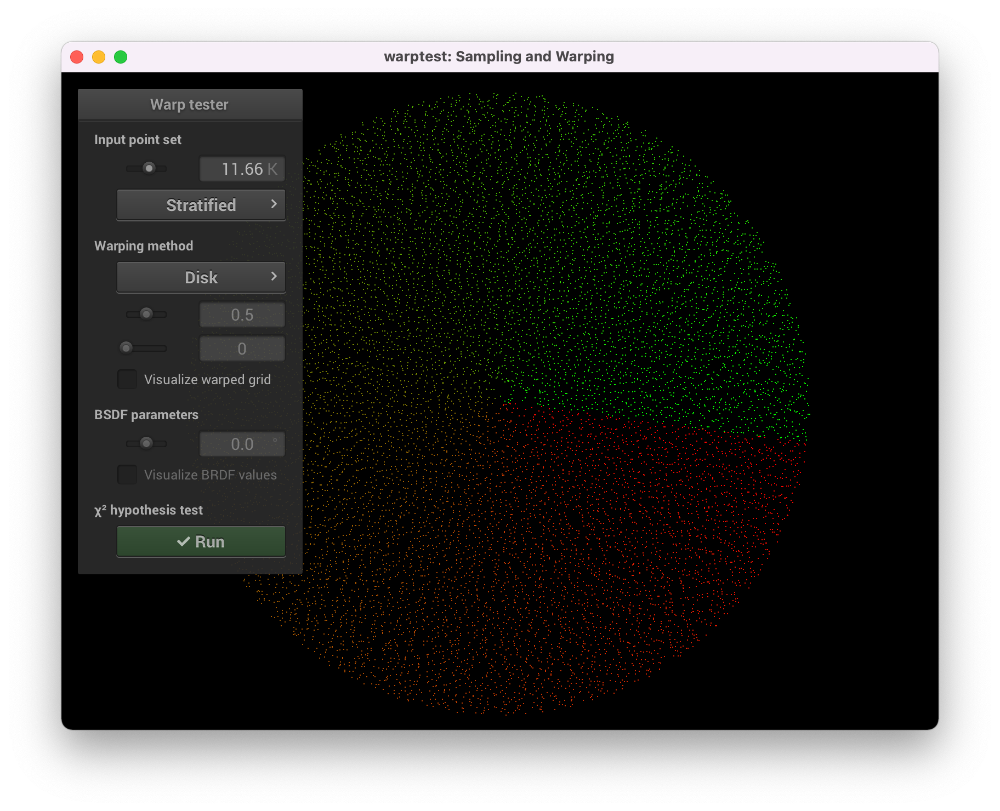
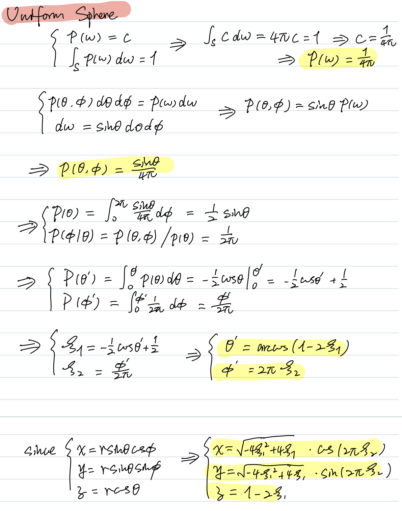
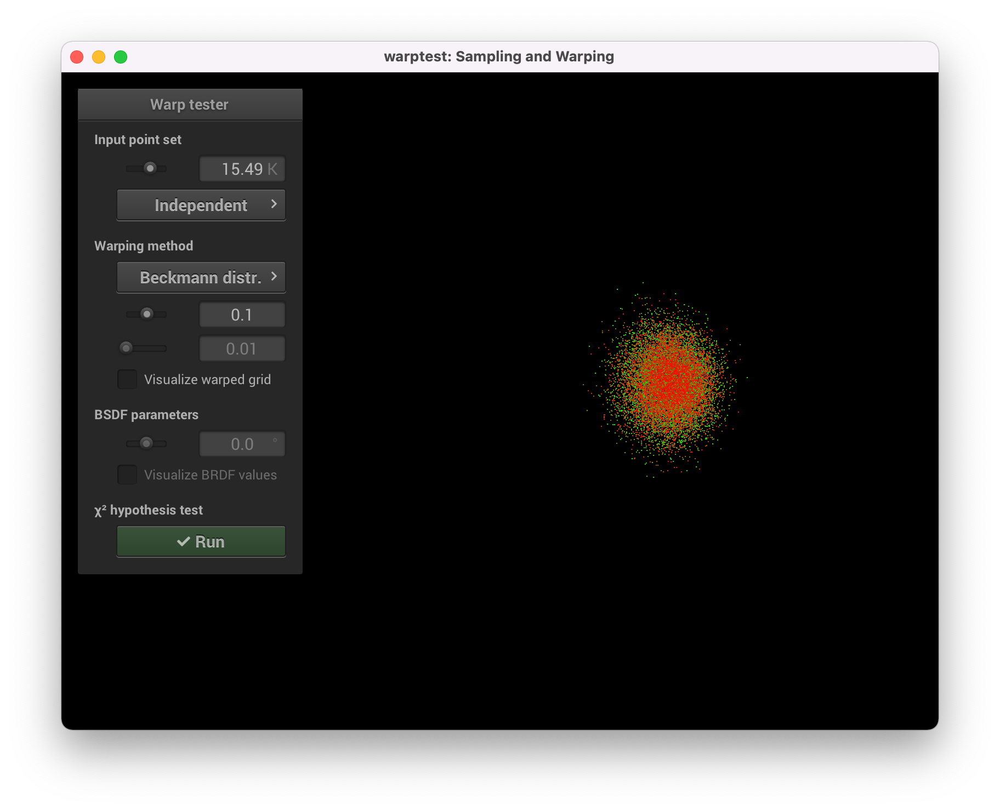
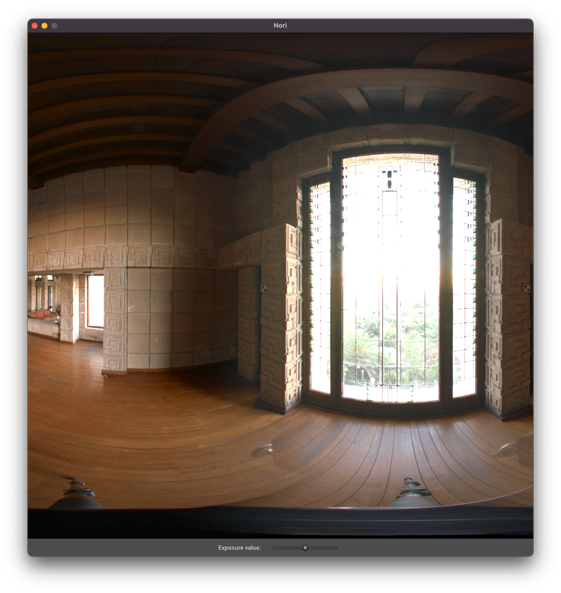

**Homework 3**
Student name: Qiyuan Dong
Sciper number: 307612
Monte Carlo Sampling (60 pts)
=============================
For each of these sections, don't forget to include necessary derivations as well as screenshots of passing $\chi^2$ tests from the warptest executable.
Tent
----
Uniform disk
------------

Uniform sphere
--------------

Uniform hemisphere
------------------
Cosine hemisphere
-----------------
Beckmann distribution
---------------------
- alpha = 0.1

- alpha = 0.5
- alpha = 1.0
- derivations
Two simple rendering algorithms (40 pts)
========================================
Point lights
------------
- Ajax bust illuminated by a point light source:
- Error between the reference image and my rendered image
- I compared the rendered image with the provided reference image
- The error is not noticeable by eye
- The mean of error is zero, minimum error is -0.029, maximum error is 0.031
- The statistics indicate that the subtle differences are probably due to the randomness of the rendering algorithm
Ambient occlusion
-----------------
- Ajax bust rendered using ambient occlusion:
- Error between the reference image and my rendered image
- I compared the rendered ambient occlusion image with the provided reference image
- The error is more noticeable than the previous one, but still seems insignificant
- The mean of error is still 0, minimum error is -0.072, maximum error is 0.081
- The statistics indicate that the subtle differences are probably due to the randomness of the rendering algorithm
Hacker Points: Hierarchical Sample Warping (20 points)
======================================================
Implementation of the hierarchical sample warping
-------------------------------------------------
- My implementation of the hierarchical sample warping is similar to the **octree** acceleration in the previous homework, but it is a **quadtree** this time
- At the beginning, the entire quadtree is built in a bottom-up way to represent the mipmap. The depth of the quadtree is equal to $M - 1$ for an image with $2^M \times 2^M$ pixels
- Each `MipMapNode` contains necessary parameters to warp a given sample point at the level and position that this node represents, such as `xmin, xmax, ymin, ymax, and the luminance of four corners`
- After warping a given sample point using the function `Point2f warpPoint(Point2f &p) `,
- If the node is an interior node, function `MipMapNode *nextNode(Point2f loc)` will return the pointer to a MipMapNode at the next level according to warped coordinates of the sample point
- If the node is an leaf node, the hierarchical warping for this sample point is done
Simple image: $2 \times 2$
-------------------------------------------------
- The simple $2 \times 2$ image contains the value
$$
\begin{bmatrix}
60 & 20\\
4 & 16
\end{bmatrix}
$$
- Warped points
- $\chi^2$ test
Interesting image: $1024 \times 1024$
-------------------------------------------------
- The image is downloaded from https://vgl.ict.usc.edu/Data/HighResProbes/. I cropped the original image to a square, and resized it into $1024 \times 1024$
- The original image is shown below

- The hierarchical warping result looks pretty reasonable to me. However, as discussed on the Piazza, the luminance distribution is very spiky and contains sharp boundaries, which results in the failure of the test.
- I applied the Gaussian blur on the original image to smooth the sharp boundaries. The blurred image passed the test this time.
How to run my hierarchical sample warping
-------------------------------------------
- The `warptest.cpp` has been modified to accept command line arguments
- To run the hierarchical sample warping on any `exr` image, you could execute
- `warptest -exr path/to/the/image`
- Without command line arguments, the hierarchical sample warping will use `scene/pa3/4by4.exr` as the default one
- Then select Hierarchical in the warping method menu
- Please note that the image should have the size $2^M \times 2^M$
- `exr` images used in this report are stored under `scene/pa3`


 - I applied the Gaussian blur on the original image to smooth the sharp boundaries. The blurred image passed the test this time.
How to run my hierarchical sample warping
-------------------------------------------
- The `warptest.cpp` has been modified to accept command line arguments
- To run the hierarchical sample warping on any `exr` image, you could execute
- `warptest -exr path/to/the/image`
- Without command line arguments, the hierarchical sample warping will use `scene/pa3/4by4.exr` as the default one
- Then select Hierarchical in the warping method menu
- Please note that the image should have the size $2^M \times 2^M$
- `exr` images used in this report are stored under `scene/pa3`
- I applied the Gaussian blur on the original image to smooth the sharp boundaries. The blurred image passed the test this time.
How to run my hierarchical sample warping
-------------------------------------------
- The `warptest.cpp` has been modified to accept command line arguments
- To run the hierarchical sample warping on any `exr` image, you could execute
- `warptest -exr path/to/the/image`
- Without command line arguments, the hierarchical sample warping will use `scene/pa3/4by4.exr` as the default one
- Then select Hierarchical in the warping method menu
- Please note that the image should have the size $2^M \times 2^M$
- `exr` images used in this report are stored under `scene/pa3`